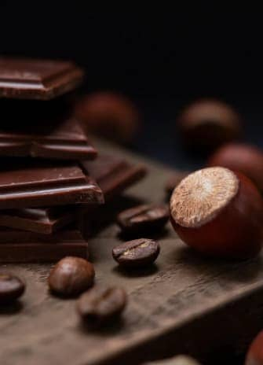

<section class="thumb" id="sellers">
  <div class="seller-container container">
    <h2 class="seller-title">
      <span class="seller-title-span">top </span>sellers
    </h2>
    <ul class="seller-list list">
      <li class="seller-item seller-item-one">
        <picture>
          <source
            srcset="
              ../img/top-sellers/seller-desktop-one.jpg    1x,
              ../img/top-sellers/seller-desktop-one@2x.jpg 2x
            "
            media="(min-width: 1200px)"
          />
          <source
            srcset="
              ../img/top-sellers/seller-tablet-one.jpg    1x,
              ../img/top-sellers/seller-tablet-one@2x.jpg 2x
            "
            media="(min-width: 768px)"
          />
          <source
            srcset="
              ../img/top-sellers/seller-mobi-one.jpg    1x,
              ../img/top-sellers/seller-mobi-one@2x.jpg 2x
            "
            media="(max-width: 767px)"
          />
          
        </picture>
        <p class="seller-text-first">
          Crazy enough chocolate originates from a bean just like the coffee
          bean called Cacao. Cacao has been around for thousands of years and
          was first discovered by the Native American tribe called the Mayans.
        </p>
      </li>
      <li class="seller-item seller-item-two">
        <picture>
          <source
            srcset="
              ../img/top-sellers/seller-desktop-two.jpg    1x,
              ../img/top-sellers/seller-desktop-two@2x.jpg 2x
            "
            media="(min-width: 1200px)"
          />
          <source
            srcset="
              ../img/top-sellers/selle-tablet-two.jpg     1x,
              ../img/top-sellers/seller-tablet-two@2x.jpg 2x
            "
            media="(min-width: 768px)"
          />
          <source
            srcset="
              ../img/top-sellers/seller-mobi-two.jpg    1x,
              ../img/top-sellers/seller-mobi-two@2x.jpg 2x
            "
            media="(max-width: 767px)"
          />
          
        </picture>
      </li>
      <li class="seller-item seller-item-three">
        <picture>
          <source
            srcset="
              ../img/top-sellers/seller-desktop-three.jpg    1x,
              ../img/top-sellers/seller-desktop-three@2x.jpg 2x
            "
            media="(min-width: 1200px)"
          />
          
        </picture>
      </li>
    </ul>
    <div class="seller-downblock">
      <p class="seller-text-last">
        Crazy enough chocolate originates from a bean just like the coffee bean
        called Cacao. Cacao has been around for thousands of years and was first
        discovered by the Native American tribe called the Mayans.
      </p>
      <button class="seller-btn" type="button" data-modal-open-buynow>
        Buy now
      </button>
    </div>
  </div>
</section>
